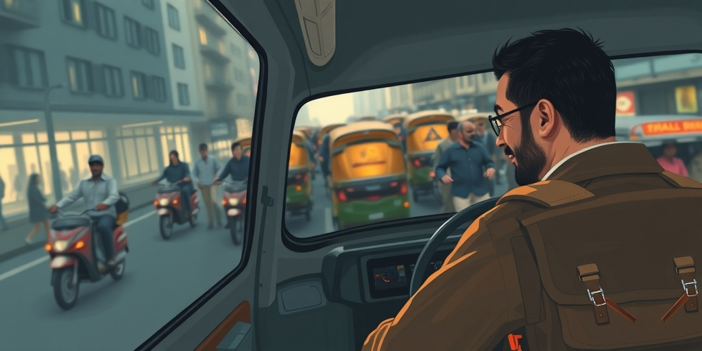
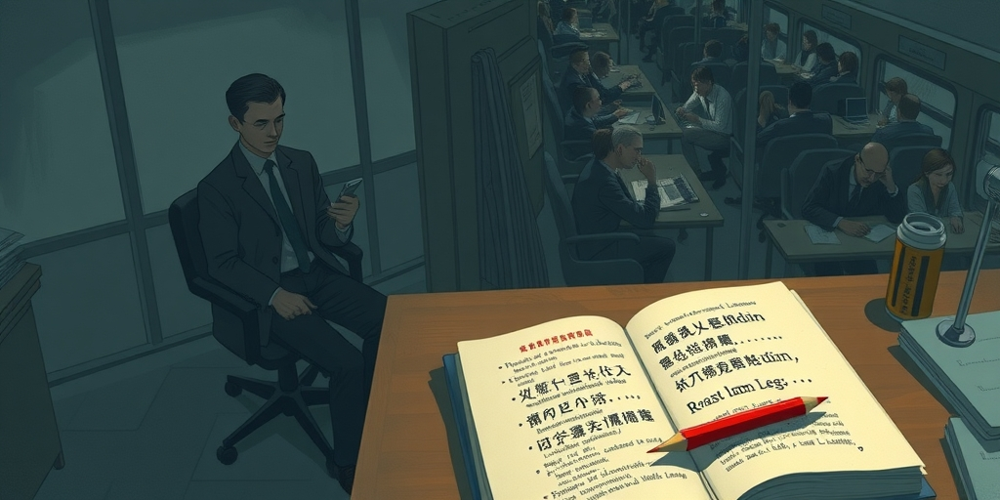

小汪老师的成长洞察 · 属于你的成长专栏
七百年前，一个农夫用计骗走了地主的驴，围观者爆发出掌声。今天，印度街头的突突车司机多收外国游客五倍车费，同样理直气壮。这中间连着一条千年未断的暗线——弱者的生存智慧，如何被编码成了文化遗产。

德里老城区的巷子窄得像血管。一个外国游客拖着行李箱，被突突车司机拦下。司机英语流利，笑容灿烂。上车后，他一路介绍景点，问游客从哪里来，家里几个孩子。下车时，他主动帮忙提行李，握手告别。游客付了三百卢比，觉得合理。后来酒店前台告诉他，这段路通常只要六十卢比。他愣了几秒，回想司机一路上的热情——那些笑容、那些关心，难道都是表演？但直觉告诉他，不是。司机在介绍自己家乡时眼里的光是真实的。那为什么多收钱？他开始觉得，自己遇到的不是一个骗子，而是一个活生生的阿凡提。
七百年前，纳斯雷丁·阿凡提用类似的方式骗了巴依老爷一头驴。故事里，围观者没有谴责阿凡提，反而为他的机智喝彩。今天，这种‘骗富人’的故事依然在民间流传，被当作智慧，而非恶行。为什么？
纳斯雷丁·阿凡提的故事横跨土耳其、伊朗、中亚、新疆，一直延伸到印度。这个覆盖区域，恰好与历史上阿拉伯帝国、奥斯曼帝国、莫卧儿帝国的统治版图高度重叠。一个机智农民戏弄地主老爷的故事模板，跨越了语言、宗教、民族的界限，成为跨文化的共同遗产。连被奥斯曼统治过的希腊和巴尔干地区也接受了这套叙事——坑蒙拐骗有钱人和政府，被视为聪明有本事的象征。这不是偶然的文化传播，而是相似的社会结构催生了相似的道德叙事。
这三个帝国都不是‘小政府’。它们是典型的榨取型帝国。包税人制度、层层加码的农业税、强迫劳役——对底层农民来说，国家就是一个合法化的抢劫机器。在奥斯曼帝国，包税人会提前向政府缴纳一笔钱，换取某个地区的收税权，然后他们会在任期内拼命压榨农民，收回成本并赚取利润。农民面对的不是抽象的法律，而是具体的人——一个带着打手上门、把最后一点粮食搬走的包税人。在这种结构下，‘偷税’‘瞒报’‘骗包税人’不是道德瑕疵，是生存策略。道德判断被翻转了：真正的盗贼是坐在衙门里的包税人，偷偷从他们手里拿回一点的人不是贼，是英雄。阿凡提是这种翻转的道德想象的具象化。
詹姆斯·斯科特在1985年出版的《弱者的武器》里，把这一切背后的逻辑说得清楚。他研究了马来西亚的农民，发现无权者的抵抗不是罢工、示威、革命——那些是找死。他们的抵抗是日常的、低姿态的、可否认的：磨洋工、装傻充愣、小偷小摸、阳奉阴违。这些行为的共同特征是：不需要组织，个人即可操作；难以追踪和惩罚；不需要公开宣称立场，可以随时否认。阿凡提故事是斯科特理论的民间神话版。阿凡提从来不正面对抗巴依，他永远用计谋、谎言、伪装来获取利益。他的每一个故事都是一堂‘弱者抵抗战术课’。
更深一层：这套策略不是个体的即兴发挥，而是文化基因级别的代际传承。纳斯雷丁故事之所以能在三大帝国传播千年，不仅因为它好笑——更因为它有用。每一个听阿凡提故事长大的农民，都在潜移默化中学会了：面对比你强大的榨取者，硬扛是愚蠢的，装傻、迂回、智取才是出路。这不是童话，这是一套编码在民间叙事里的生存手册。一代又一代人通过笑声传递着同一条信息：不要正面冲突，要用脑子。
在阿凡提故事里，有一则经典：阿凡提去集市买驴，他假装不懂行情，让商人把驴吹得天花乱坠。最后他付了钱，却牵走了一头瘸腿驴。商人得意洋洋，以为宰了个傻子。第二天，阿凡提把驴牵回来，说这驴不听话，要求退货。商人一看，驴腿竟然好了——原来阿凡提连夜给驴治了腿。商人只好原价收回。阿凡提白用了一天驴，还赚了商人的饲料。在这个故事里，商人先骗阿凡提，阿凡提用更高的智力骗回来。观众为阿凡提叫好，因为商人‘先不仁’。但仔细想：商人骗阿凡提的时候，他是不是也在用同样的逻辑——‘这是个外行的农民，多赚他的钱是本事’？
旅游经济无意识地重现了帝国时代的权力结构。外国游客和本地摊贩之间的互动，跟当年巴依老爷和阿凡提之间的互动，在结构上是同构的。一方拥有不成比例的财富和自由移动的权力，另一方拥有不成比例的贫穷和本地知识的优势。本地人用‘信息不对称’作为武器，跟阿凡提用‘智力不对称’对付巴依，本质上是同一种打法。
突突车司机的双重真心——真诚对你好，同时真诚多收钱——让很多西方游客困惑。但在本地人的道德框架里，这两者不在同一个维度上。人际关系层面：我对你真诚，帮你提行李，给你指路，这是人与人之间的善意。经济公平层面：我和你之间的贫富差距本身就不公平。你从富裕国家来，手里的钱在本地人看来不是‘你辛苦挣的工资’，而是‘你从富裕体系里溢出的零头’。收你五倍价格不是骗，是把你溢出的零头匀一点回来。这套逻辑在西方游客看来是‘两面三刀’，在本地人看来是‘情理两清’——感情是感情，账是账，两个都可以真诚。
在历史上，这些帝国的商人群体往往与统治阶层有着千丝万缕的联系——特权经营、包税承包、垄断贸易。商人在底层视角中不是‘勤劳致富的代表’，而是‘和官员一起分赃的人’。所以阿凡提骗商人跟骗巴依老爷用的是同一套逻辑。到了今天，外国游客就是新的‘巴依’——你从富裕国家来，在贫穷国家消费，你手里的钱在本地人看来不是‘你辛苦挣的工资’，而是‘你从富裕体系里溢出的零头’。

中国新疆地区在解放后搜集整理阿凡提故事时，进行了一场‘净化’操作。有一则故事叫《出来，进去》，讲阿凡提骗走贫苦老农的烤羊腿。这则故事被删了。另一则《借锅子》里，被愚弄的角色从普通老百姓改成了巴依老爷。编辑者直觉上就知道：阿凡提只能骗富人，不能骗穷人——骗穷人这个故事就变质了。这个删改本身暴露了这套叙事的真正道德逻辑：合法性不在于‘骗’这个行为，而在于‘骗的对象是谁’。
如果阿凡提可以骗任何人，他就是个骗子。但如果他‘只骗富人’，他就是英雄。这个道德系统严格依赖于对‘谁是掠夺者、谁是被掠夺者’的界定。一旦这个界定模糊了——阿凡提开始骗穷人了——整套‘弱者的武器’的道德合法性就瞬间蒸发。而这种界定的脆弱性，恰恰是现实中‘阿凡提智慧’最容易滑向纯粹欺诈的地方。一个突突车司机多收外国游客的钱，你可以说他在纠正全球不平等。但如果他多收本国穷人的钱呢？如果他的对象不再是‘巴依’，而是另一个‘阿凡提’呢？故事就讲不下去了。
其实，类似的删改在民间故事整理中并不少见。格林童话的早期版本充满血腥和性，后来被净化成儿童读物。但阿凡提故事的净化不同——它不是为了保护儿童，而是为了保护一种道德立场。编辑者恐惧的不是暴力，而是阿凡提的道德模糊性。他们需要阿凡提永远是英雄，所以必须确保他永远只骗‘该骗的人’。
我们每个人在自己处于弱势位置时都是阿凡提。觉得占强势者的便宜是天经地义。月底报销时多填一点，觉得公司不差这点钱。出国旅游时被宰，觉得当地人太坏。而当我们处于强势位置时——比如你是一个小老板，员工磨洋工——你立刻变成巴依，觉得被占便宜是不可接受的欺诈。
阿凡提故事最厉害的地方不是教你骗人。是让你看到：你骂别人是骗子的时候，可能只是因为你坐到了巴依的那把椅子上。这套逻辑不是印度或者中东的‘文化特征’。它是所有经历过长期权力不对等的社会都会发展出的心理机制。它藏在每个人的心里，等待合适的权力位置被激活。
下次你觉得自己被‘宰’了，不妨停下来想一想：对方眼中的你，是不是一个现代的巴依？而你愤怒的，究竟是他的欺骗，还是你突然发现自己坐在了被愚弄的那一端？
写给你的话
下次你在景区被多收钱，或者在商务谈判中被对方用信息差占了便宜，别急着愤怒。想一想：如果你坐在对方的椅子上，你会不会做同样的事？如果你的答案是会，那你愤怒的可能不是‘欺骗’，而是‘这次轮到我当巴依了’。
这套逻辑在亲密关系里同样暗流涌动。当你觉得伴侣‘占了你便宜’时，不妨问问自己：你定义的‘公平’，是基于谁的尺度？
小汪老师的成长洞察 · 属于你的成长专栏